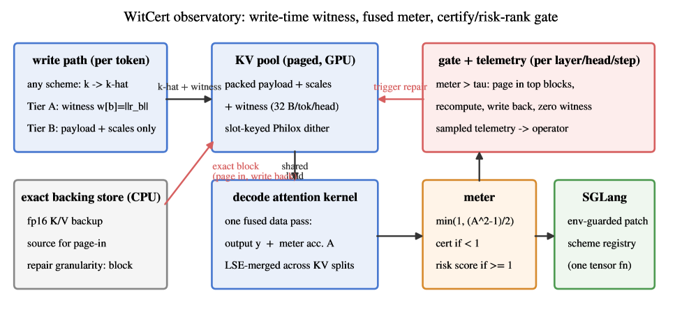
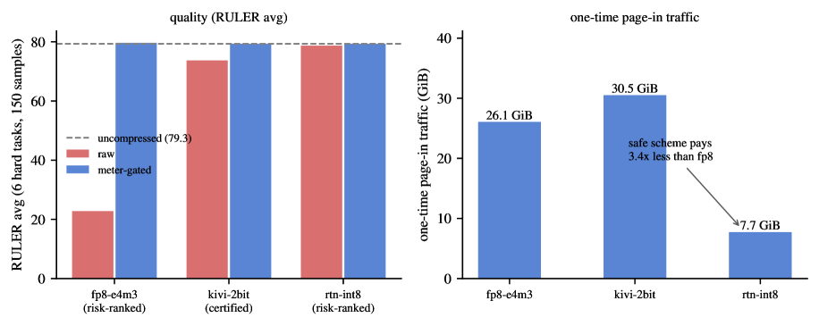
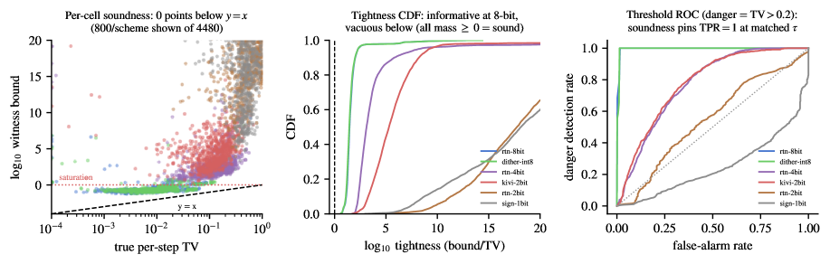

Core soundness theorems for the KV-cache quantization attention-error certificates are machine-checked in Lean 4 with Mathlib; the Lean development is released.
Abstract
KV-cache quantization is validated today by offline benchmark averages; a deployed system cannot tell whether compression is damaging the request it is serving right now. We give it a provably sound runtime meter – a "DTrace for KV quantization": a per-(layer, head, step) upper bound on the total variation between exact and compressed attention. The meter has two tiers: a deterministic band-norm-witness bound, sound for any cache-preserving black-box quantizer and for any query (adaptive-safe, worst-case Cauchy–Schwarz plus RoPE band-unitarity), and a tighter probabilistic certificate for a controlled subtractively-dithered INT8 quantizer under an explicit request-level failure budget (stated for non-adaptive queries; core theorems machine-checked in Lean 4). Three results. Observability: the meter enters SGLang through an env-guarded patch, and any scheme registered as one tensor function is measured in live serving. Repair: meter-driven gating – risk-ranked where the witness is saturated, certified where it is informative – empirically restores the quality floor at benchmark scale, e.g. raw-cast fp8 from 22.8 back to 79.7 on hard RULER tasks with the difference from uncompressed bounded at $[+0.0,+0.8]$ by a paired test. Analysis: aggressive schemes survive on cross-layer error cancellation, not per-step fidelity – in a 28-layer sweep, no single layer's pollution alone loses anything (0/28) – and the certified int8 cache serves $1.88\times$ more KV tokens at the same memory in SGLang. All artifacts, guards, and the Lean development are released at https://github.com/metask-ai/witcert-kv-certificates; every number regenerates from the shipped artifacts by one command.
Problem
KV-cache compression in LLM serving is validated only by offline benchmark averages. A deployed system cannot observe whether quantization is damaging the request it is currently serving. Existing runtime certificates are too conservative to authorize any compression.
Approach
A two-tier runtime meter upper-bounds the total variation between exact and compressed attention per layer, head and step. Tier A is a deterministic bound built from band-wise residual-norm witnesses, using Cauchy–Schwarz and RoPE band unitarity, and is sound for any cache-preserving quantizer. Tier B is a tighter probabilistic certificate for subtractively-dithered INT8 under a request-level failure budget. Core theorems are machine-checked in Lean 4/Mathlib, and the meter is integrated into SGLang to drive gating and repair.

Figure 2: The WitCert observatory. Any scheme’s residual leaves a witness at write time; the decode kernel computes output and meter in one fused data pass (LSE-merged across KV splits); the gate repairs at block granularity from the exact backing store and zeroes the repaired witnesses; SGLang integration is a bit-identical-when-off env-guarded patch.
Results
Meter-driven gating restores raw fp8 from 22.8 to 79.7 on hard RULER tasks, statistically close to uncompressed. The certificate cuts page-in rate by 28.7–77.0% relative to a tanh bound, and certified INT8 serves 1.88× more KV tokens at the same memory. The paper also exhibits a plausible certificate that is unsound, with a minimal counterexample and a sound replacement.

Figure 5: Meter gating at benchmark scale (labels per Sec. 4.3 : risk-ranked at \tau{\geq}1 , certified at \tau{<}1 ): quality floor empirically restored (left; a benchmark outcome, not a corollary of the TV bound); one-time page-in traffic under incremental persistent repair (right)—the safe scheme pays 3.4\times less than the broken one.

Figure 1: The universal meter on six black-box quantizers, per-cell diagnostics ( n{=}4480 cells each, unclamped log-domain values). Left : per-cell scatter—zero points below y{=}x (soundness); below the saturation line the meter is also informative. Middle : tightness CDF (bound/TV)—8-bit schemes concentrate near 10^{1.5} , 1–2 bit schemes are vacuous by many orders of magnitude; all mass \geq 0
Model
Domain
δ=1e-4
δ=1e-2
tanh (δ=0)
Qwen2.5-7B
natural
0.792
0.809
0.167
Qwen2.5-7B
needle
0.802
0.810
0.485
Mistral-7B
natural
0.792
0.793
0.520
Yi-1.5-6B
natural
0.557
0.559
0.141
Joint K+V step coverage vs request-level budget δ (subset)